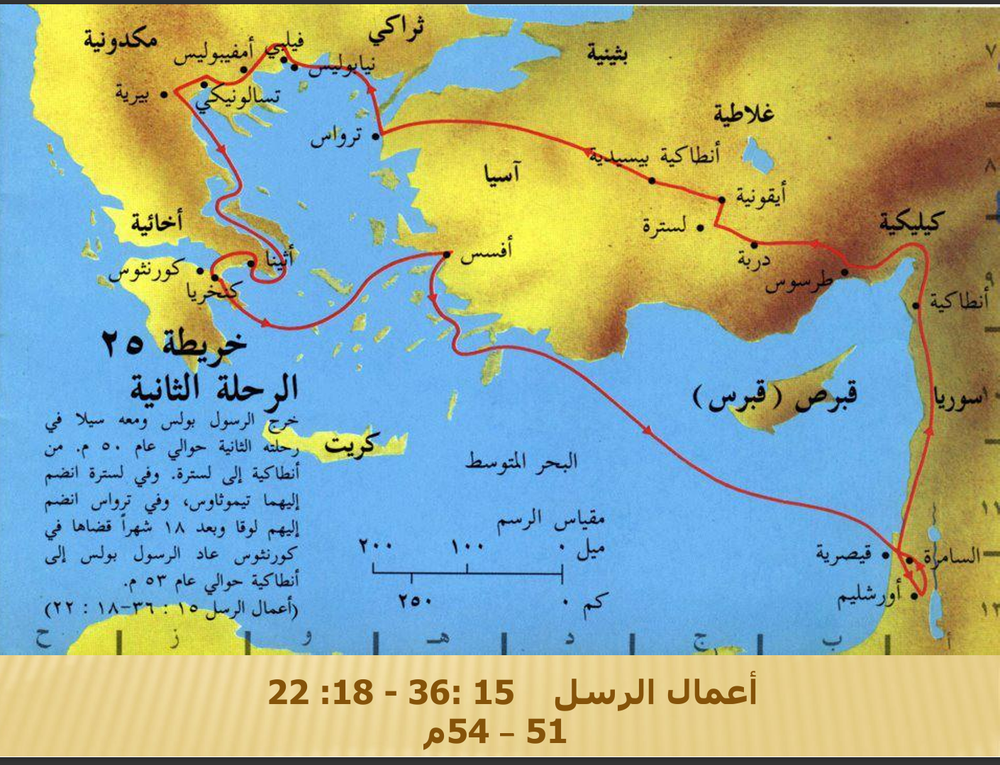

الرحلة التبشيرية الثانية
من أنطاكية إلى أوروبا (فيلبي، تسالونيكي، وأثينا)
من أنطاكية إلى أوروبا (فيلبي، تسالونيكي، وأثينا)
الرحلة بدأت بخلاف بين بولس وبرنابا بخصوص "مرقس"، فانفصلوا، وأخد بولس معاه سيلا وطلعوا يفتقدوا الكنائس في آسيا الصغرى، وهناك انضم ليهم تيموثاوس. التحول الكبير حصل لما بولس شاف رؤيا لراجل مكدوني بينادي عليه، فقرر يعبر لـ أوروبا. بدأت الخدمة في مدينة فيلبي، وهناك آمنت ليديا بائعة الأرجوان، وبعدها بولس وسيلا اتسجنوا وحصلت معجزة الزلزال اللي كانت سبب في إيمان السجان. بعد كده كملوا على تسالونيكي وبيرية، وواجهوا مقاومة من اليهود، فبولس سابهم وراح أثينا، وكلم الفلاسفة عن الإله المجهول. المحطة اللي طول فيها كانت كورنثوس، قعد هناك سنة ونص يخدم ويشتغل في صناعة الخيام مع أكيلا وبريسكيلا. وفي طريق الرجوع، عدى على أفسس، وختم الرحلة في أنطاكية.

الخريطة دي بتوضح خط سير الرحلة التبشيرية الثانية لبولس الرسول اللي بدأت من أنطاكية (في سوريا) سنة 50 م تقريبًا. بولس أخد معاه سيلا وطلعوا برًا ناحية الشمال، مروا بمدن طرسوس ودربة ولسترة (اللي انضم ليهم فيها تيموثاوس) وأيقونية وأنطاكية بيسيدية. التحول الكبير في الخريطة هو عند مدينة ترواس، هناك انضم ليهم لوقا الطبيب، وبولس شاف الرؤيا وخدوا المركب وعدوا البحر لـ أوروبا. أول محطة أوروبية كانت فيلبي، وبعدها نزلوا على تسالونيكي وبيرية، لحد ما وصلوا لـ أثينا (مركز الفلسفة) ومنها لـ كورنثوس، اللي قعدوا فيها 18 شهر (سنة ونص). في طريق العودة، بولس ركب المركب من ميناء كنخريا لـ أفسس، ومنها نزل بحريًا لـ قيسارية، وزار أورشليم، وأخيرًا رجع لنقطة البداية في أنطاكية سنة 53 م تقريبًا.
لعبه صغيره عشان المعلومه تثبت بس قبل ما تدخل قول يارب تشتغل عشان مش بعرف اعمل العاب بامانه مكدبش عليك يعني
ابدأ اللعبة الآن 🎮